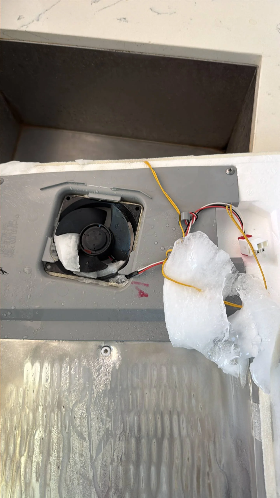

LG Refrigerator Ice Maker Is Not Making Ice — Possible Water Inlet Valve or Ice Maker Assembly Failure
If your LG refrigerator is no longer making ice, the problem does not necessarily mean the refrigerator has stopped cooling properly. In many cases, the freezer continues maintaining the correct temperature while only the ice-making system is affected. Automatic ice production depends on a steady water supply, proper freezer temperatures, and several electrical and mechanical components working together. If any part of this system malfunctions, ice production may slow down, become inconsistent, or stop completely. Common causes include a faulty water inlet valve, a defective ice maker assembly, a clogged water filter, or restricted water flow.
Modern LG refrigerators automatically produce ice by filling the ice mold with water, freezing it, ejecting the finished cubes into the storage bin, and repeating the process several times each day. The electronic control system monitors water flow, freezer temperature, and ice production while coordinating the operation of the inlet valve, ice maker motor, and internal sensors. If any stage of this cycle is interrupted, the refrigerator may stop making ice even though other functions continue operating normally.
One of the most common causes is a faulty water inlet valve. This electrically controlled valve opens for a short period during each ice-making cycle, allowing water to enter the ice mold. If the valve becomes clogged with mineral deposits, develops an internal electrical failure, or no longer opens completely, the ice maker receives little or no water. In some situations, only a few small or partially formed ice cubes appear, while in others the ice tray remains completely dry because no water enters the mold at all.

A defective ice maker assembly is another frequent reason for ice production failure. The assembly contains several components, including the ice mold, ejector mechanism, motor, heater, and internal control electronics. If the motor fails, the ejector fingers become damaged, or the internal control module stops functioning correctly, the ice maker may no longer complete its harvest cycle. Depending on the specific failure, the unit may stop filling with water, fail to eject completed ice cubes, or remain stuck in the middle of the production cycle.
Low household water pressure can also prevent the ice maker from operating properly. LG refrigerators require adequate water pressure for the inlet valve to function correctly and for the ice mold to fill completely. A partially closed shutoff valve, kinked water supply line, clogged water filter, or problems with the home's plumbing system may reduce water pressure enough to interrupt normal ice production. In many cases, homeowners notice smaller-than-normal ice cubes before ice production stops entirely.
A clogged or overdue water filter is another common factor. As the filter collects sediment and impurities from the household water supply, water flow gradually decreases. Eventually, the reduced pressure may become insufficient for the ice maker to fill properly. Replacing the water filter according to LG's recommended maintenance schedule helps maintain consistent water flow and supports reliable ice production.
Freezer temperature also plays an important role in the ice-making process. If the freezer compartment is warmer than the recommended operating temperature, water inside the ice mold may not freeze completely before the next production cycle begins. This can prevent the ice maker from harvesting the cubes or cause the electronic controls to pause ice production until proper freezing conditions return. Cooling problems, dirty condenser coils, or frequent door openings may all contribute to elevated freezer temperatures.
In some cases, the ice maker itself may become frozen. Water can freeze inside the fill tube or around the ice mold if the inlet valve leaks slightly between cycles or if the freezer temperature is set too low.
A frozen fill tube prevents fresh water from reaching the ice maker, while accumulated ice around moving components can interfere with the ejector mechanism. Although manually thawing the frozen section may temporarily restore operation, the underlying cause should still be identified to prevent the problem from returning. Electrical failures involving the control board or wiring harness may also interrupt ice production. The electronic control board coordinates communication between the ice maker, temperature sensors, and water inlet valve. If damaged wiring, loose connectors, or a failed control board prevents these components from communicating properly, the ice maker may stop operating even though the refrigerator continues cooling normally. Some LG models may also display diagnostic error codes that help identify electronic or sensor-related faults.
Many homeowners attempt to reset the ice maker when it stops producing ice. While performing the manufacturer's recommended reset procedure can sometimes restore operation after a temporary electronic interruption, it will not resolve mechanical failures, water supply restrictions, or defective electrical components. If the ice maker continues failing after a reset, further diagnosis is necessary to identify the actual source of the problem.
Several warning signs often accompany ice maker failure. These include no ice production despite normal freezer temperatures, unusually small or hollow ice cubes, water leaking inside the freezer, a frozen fill tube, clicking sounds from the ice maker assembly, slow ice production, or an ice maker that stops after producing only a few batches. In some cases, both the water dispenser and ice maker may stop working simultaneously, indicating a common water supply or inlet valve problem.
Diagnosing ice maker problems requires inspection of the entire water delivery and ice production system. Professional technicians test water pressure, inspect the inlet valve, verify freezer temperature, examine the fill tube for blockages, evaluate the ice maker assembly, test electrical continuity, and inspect the electronic control board. Because several different failures can produce similar symptoms, replacing components without proper diagnosis often results in unnecessary repair costs.
To help maintain reliable ice production, replace the water filter at the recommended intervals, ensure the freezer temperature remains within LG's recommended range, keep the water supply line free from kinks, periodically empty old ice from the storage bin, and inspect the water connection for leaks. Regular maintenance reduces strain on the ice-making system and helps prevent common operating problems.
If your LG refrigerator ice maker is not making ice, it is important to address the issue promptly. A faulty water inlet valve, defective ice maker assembly, clogged water filter, frozen fill tube, or electronic control problem can all interrupt normal ice production. Professional diagnosis can accurately determine the cause of the malfunction and restore dependable ice production while preventing unnecessary part replacement and additional damage to your LG refrigerator.